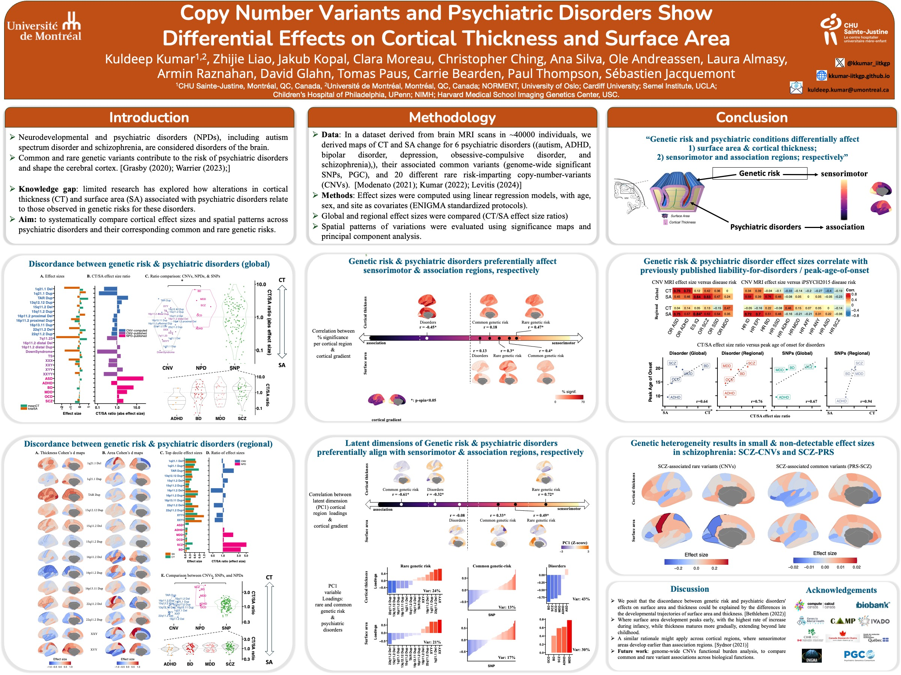
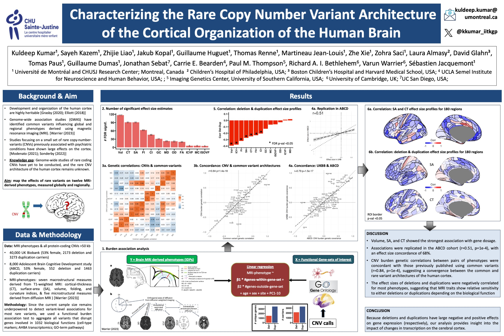
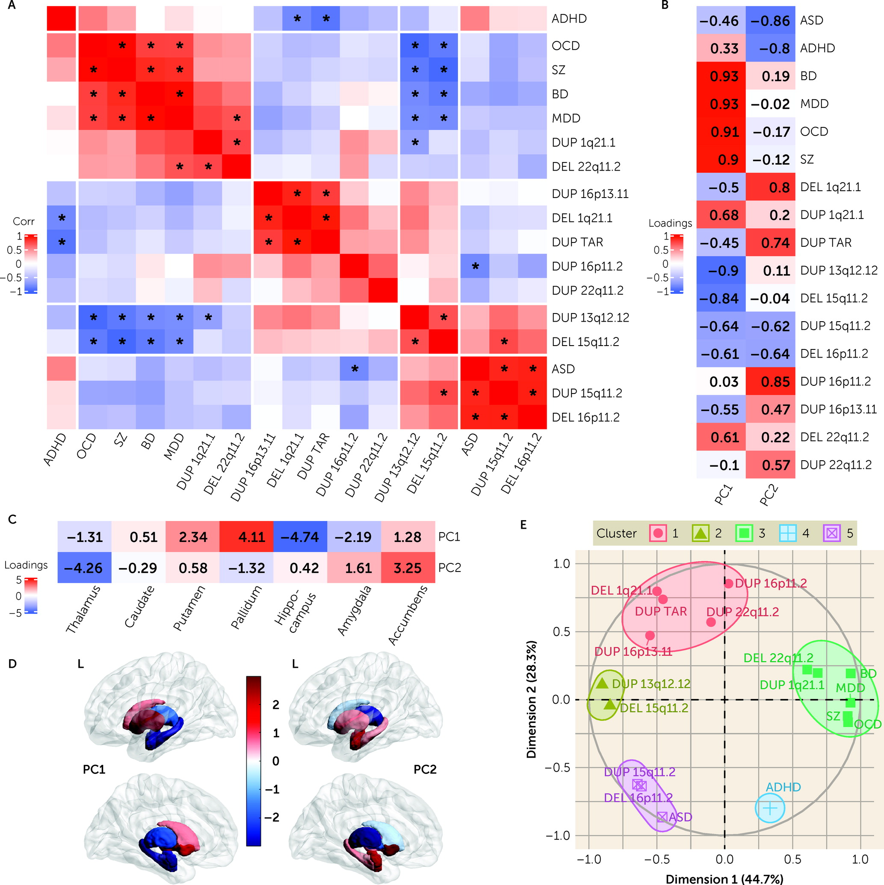
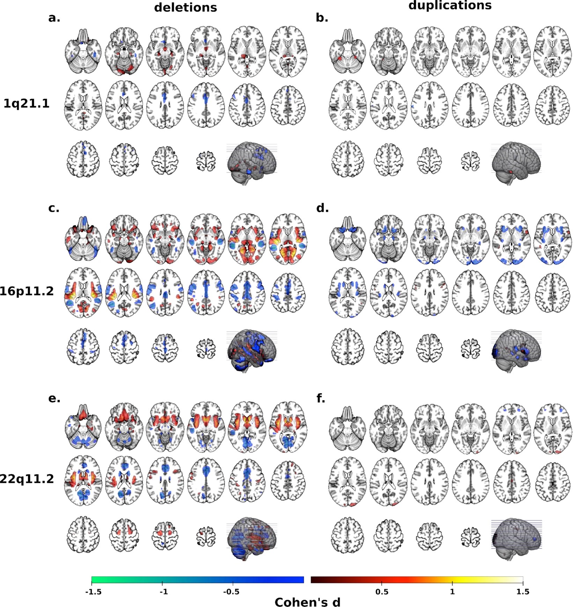
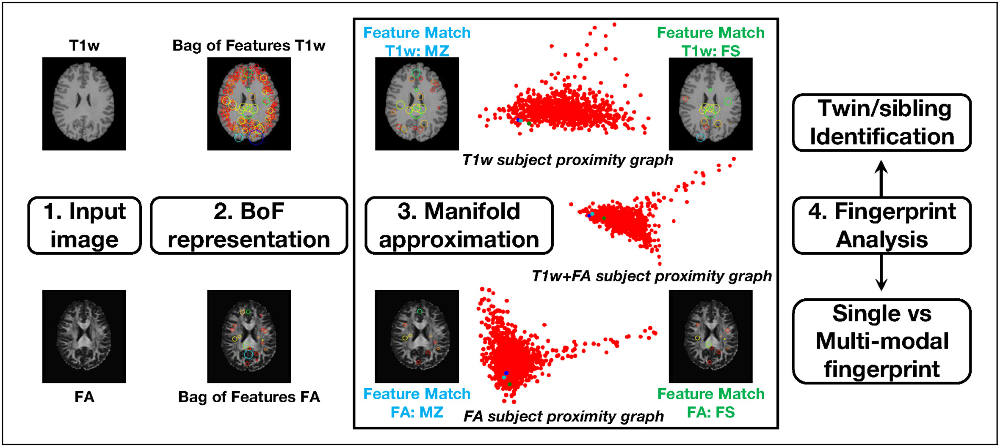

Hello! I'm Kuldeep Kumar. My research integrates genetic and neuroimaging data to understand how genetic risk for neurodevelopmental and psychiatric disorders (NPDs) relates to observable differences in brain structure.
Research Summary: I design analytical approaches to systematically cross-examine the impact of rare and common genetic variants on the brain as measured by Magnetic Resonance Imaging (MRI). My work aims to connect psychiatric and neuroimaging genetics by leveraging functional genomics to reveal how large-scale brain networks might mediate the path from genes to disorders. I actively collaborate with the PGC and ENIGMA consortia at the intersection of machine learning, neuroimaging genetics, and psychiatric genetics.
Background:

Conference: ACNP 2024
This project investigates how specific Copy Number Variants (CNVs) and psychiatric disorders independently and jointly influence cortical thickness and surface area.

Conference: SOBP 2024
We aim to map the architecture of rare CNVs to specific patterns of cortical organization, providing a link between rare genetic events and brain structure.
For a complete list, please see my Google Scholar profile.

Authors: Kumar, K., et al.
Journal: American Journal of Psychiatry (2023)

Authors: Kumar, K., et al.
Journal: Translational Psychiatry (2021)

Authors: Kumar, K., et al.
Journal: NeuroImage (2018)
SOBP 2024: Click to watch on Vimeo